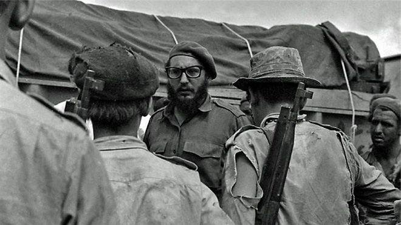

(UEPB) A China integrou o bloco socialista em 1949, rivalizando sua liderança com a extinta URSS. As etapas do processo socialista chinês são diversas e vão desde a radical planificação econômica até o momento em que os chineses
abrem-se ao mundo capitalista, sem abandonar sua organização política. Assinale a única alternativa INCORRETA.
a) A Revolução Cultural, na década de [19]60, é tida como o oxigênio da revolução chinesa, pois resgatou tradições milenares e desvalorizou a origem camponesa do povo, que impedia o desenvolvimento econômico.
b) Ao final da década de [19]70, a China abre-se ao mundo e ingressa na ONU. Com a morte de Mao Tsé-tung, em 1976, e a exclusão de radicais maoistas do poder, se iniciou um processo de planejamento intitulado as “quatro
modernizações” – indústria, agricultura, defesa e cultura.
c) Nos anos [19]80 houve a “desmaoização” na China. Propunha-se repensar o papel desempenhado por Mao Tsé-tung, combatendo o culto à sua personalidade, e a humanização do regime ao se reabilitarem lideranças expurgadas durante
a Revolução Cultural.
d) As relações políticas entre China e URSS foram rompidas no final da década de [19]50 devido a discrepâncias ideológicas, conflitos fronteiriços e divergências sobre questões internacionais. Com a ascensão de Gorbachev (em
1985) houve uma reaproximação entre os dois países.
e) O desenvolvimento tecnológico que ajudou a modernizar a China possibilitou a abertura para o Ocidente, como pode ser visto nas Olimpíadas de 2008. Mas o governo chinês não se descuida dos chamados perigos de uma “excessiva
ocidentalização” e mantém rígida política que visa controlar os hábitos de consumo e informação da sociedade.
(UFABC – SP) Na solenidade de abertura dos Jogos Olímpicos, os chineses não mostraram ao público alguns períodos de sua história. Um desses períodos pode ser observado na imagem a seguir.
Cartaz de propaganda chinesa de 1949 (Flávio Berutti. Tempo e Espaço: História)
A imagem faz referência a um momento histórico no qual emergiu um governo que:
a) aglutinou diferentes setores da sociedade chinesa na luta pela manutenção das relações sociais dominantes no período colonial.
b) teve como tarefas iniciais derrotar os grandes proprietários de terra e combater o imperialismo na construção do Estado socialista.
c) implantou uma política econômica baseada na ideia de que o mercado garantiria a regulamentação da produção, dos preços e do consumo.
d) organizou um sistema político pluripartidário fundamentado nos ideais defendidos principalmente pelos economistas e intelectuais liberais.
e) favoreceu setores associados à alta burguesia, quando vetou a reforma agrária reivindicada pelos camponeses e operários do país.
(UEM – PR) Assinale o que for correto sobre a China contemporânea.
(01) A “Revolta da Paz Celestial”, ocorrida em 1989, foi uma revolta popular pela implantação da democracia no país.
(02) O acúmulo de capital financeiro possibilitou que a China comunista se transformasse, no início do século XXI, em um país rico, fechado e isolado do mercado mundial.
(04) Contrariamente ao comunismo soviético, o comunismo chinês pouco influenciou os meios políticos, artísticos e culturais do Ocidente.
(08) Em 1949, é proclamada a República Popular da China, sob a liderança do líder comunista Mao Tsé-tung.
(16) A Revolução Cultural Chinesa, de 1966 a 1976, foi um movimento que uniu intelectuais e políticos com o objetivo de divulgar as tradições do país no Ocidente.
(UNIR – RO)
Os EUA suspenderam na segunda-feira (13 de abril de 2009) restrições para que familiares de cubanos vivendo no país possam viajar a Cuba e o fim de condicionantes para remessas de dinheiro a parentes. Empresas norte-americanas
de telecomunicações também foram autorizadas a participar de licenciamentos em Cuba. O embargo econômico norte-americano a Cuba, vigente desde 1962, não foi derrubado.
(Disponível em <http://br.reuters.com/article/topNews/idBRSPE53D0LF20090414>. Acesso em 27/10/2009.)
O texto demonstra uma distensão na relação entre EUA e Cuba que, ao longo da segunda metade do século XX, passou por diversas fases. Sobre o assunto, marque V para as afirmativas verdadeiras e F para as falsas.
O apoio dos EUA ao governo de Fulgencio Batista fez com que o Congresso norte-americano, por meio da Emenda Platt, decretasse o bloqueio econômico a Cuba tão logo ocorreu a ascensão de Fidel Castro ao poder.
A reforma agrária decretada pelo governo cubano revolucionário aliada à nacionalização dos bancos e das minas contribuíram para o crescimento dos problemas com os EUA.
A “Invasão da Baía dos Porcos”, tentativa fracassada de derrubada do Governo de Fidel Castro por dissidentes, financiada pelos EUA, marcou o aumento das tensões entre os dois países.
A chamada “Crise dos Mísseis”, em outubro de 1962, quando a União Soviética tentou instalar mísseis nucleares em território cubano, demonstrou o alinhamento de Cuba ao bloco comunista.
Assinale a sequência correta.
a) V, F, V, F
b) F, F, V, V
c) V, F, F, F
d) F, V, V, V
e) V, V, F, V
(UFAL) As lutas sociais na América Latina mostram suas dificuldades econômicas e a falta de maior convivência com a democracia. Muitas questões continuam pendentes, e a desigualdade provoca injustiças e violência. Com a Revolução
Cubana, liderada por Fidel Castro, tivemos:
a) a implantação de um sistema político socialista, que estabilizou a economia cubana e impôs uma democracia política.
b) o fim da pobreza e a renovação dos costumes, com ampla influência da União Soviética nas manifestações culturais.
c) o estabelecimento de um governo bem aceito na América Latina, sem maiores problemas nas relações econômicas e culturais.
d) o término das relações diplomáticas com os Estados Unidos, o que provocou o acirramento das disputas e polêmicas frequentes.
e) a consolidação de um Socialismo com autonomia econômica, crítico do autoritarismo e sem influências externas.
(ENEM)
As migrações transnacionais, intensificadas e generalizadas nas últimas décadas do século XX, expressam aspectos particularmente importantes da problemática racial, visto como dilema também mundial. Deslocam-se indivíduos,
famílias e coletividades para lugares próximos e distantes, envolvendo mudanças mais ou menos drásticas nas condições de vida e trabalho, em padrões e valores socioculturais. Deslocam-se para sociedades semelhantes ou
radicalmente distintas, algumas vezes compreendendo culturas ou mesmo civilizações totalmente diversas.
IANNI, O. A era do globalismo. Rio de Janeiro: Civilização Brasileira, 1996.
A mobilidade populacional da segunda metade do século XX teve um papel importante na formação social e econômica de diversos estados nacionais.
Uma razão para os movimentos migratórios nas últimas décadas e uma política migratória atual dos países desenvolvidos são:
a) a busca de oportunidades de trabalho e o aumento de barreiras contra a imigração.
b) a necessidade de qualificação profissional e a abertura das fronteiras para os imigrantes.
c) o desenvolvimento de projetos de pesquisa e o acautelamento dos bens dos imigrantes.
d) a expansão da fronteira agrícola e a expulsão dos imigrantes qualificados.
e) a fuga decorrente de conflitos políticos e o fortalecimento de políticas sociais.
Sobre a Guerra da Coreia, leia o fragmento a seguir.
Nas primeiras horas da manhã de 25 de junho [1950], forças norte-coreanas deram início à invasão total da Coreia do Sul com um devastador fogo de artilharia. O líder do Norte, Kim Il-sung, disse estar respondendo a uma agressão
não provocada do Sul, governado pelo primeiro- ministro Syngman Rhee. O tamanho da ofensiva, no entanto, era uma clara evidência de uma campanha longamente planejada visando à reunificação da Coreia. A divisão de 1945 fora
concebida como um expediente temporário, até que os Estados Unidos e União Soviética chegassem a um acordo sobre o futuro do país. Dois governos distintos haviam surgido, ambos reivindicando a legítima autoridade sobre a Coreia.
Os comunistas governavam o Norte, e no Sul uma ditadura corrupta e impopular era apoiada pelos Estados Unidos.
1001 DIAS que abalaram o mundo. Rio de Janeiro: Sextante, 2009. p. 770.
De acordo com o texto, analise as afirmativas a seguir.
(01) A Guerra da Coreia foi caracterizada pelas disputas diplomáticas sem a utilização de forças bélicas.
(02) O conflito foi causado exclusivamente pela presença de forças militares estadunidenses e soviéticas na Península da Coreia.
(04) A divisão das Coreias pelo paralelo 38º norte, estabelecida em 1945, era temporária enquanto os governos dos Estados Unidos e da União Soviética resolviam suas questões na região.
(08) A divisão das Coreias, que era temporária, acabou permanecendo e chegou até os dias atuais.
(16) A Península acabou ficando dividida em dois países distintos: ao norte, a Coreia capitalista e, ao sul, a Coreia socialista.
(32) Atualmente, a Coreia do Norte é inexpressiva no cenário internacional em decorrência de sua economia em crise e da falta de potencial bélico que possa implicar novos conflitos.
(FAAP – SP) Assinale a alternativa correta em relação às afirmativas que se seguem, conforme sejam falsas ou verdadeiras.

Agência Estado
Fidel Castro fala com soldados cubanos durante a invasão, em 1961.
Em 1961, a invasão da Baía dos Porcos, em Cuba, foi ordenada pelo líder soviético Nikita Krushchov em apoio à revolução liderada por Fidel Castro.
Em 1962, na tentativa de enfraquecer o regime cubano, os Estados Unidos impuseram um embargo econômico ao país caribenho, mantido até hoje.
A crise dos mísseis de Cuba foi um capítulo tenso da Guerra Fria, quando Estados Unidos e União Soviética quase se envolveram num conflito nuclear.
O primeiro governo instaurado em Cuba, após a vitória da Revolução de 1959, foi a ditadura de Fulgencio Batista.
a) Apenas I e IV são corretas.
b) Apenas II e III são corretas.
c) Apenas I e III são corretas.
d) Apenas III e IV são corretas.
(UFMA) Sobre a Revolução Cubana (1959) e sua influência na América Latina são corretas as afirmações:
Após fracassada a invasão da Baía dos Porcos, apoiada pelos Estados Unidos, o governo cubano anunciou a entrada do país no bloco socialista, ao lado da União Soviética.
A derrubada do ditador Fulgencio Batista foi seguida da adoção de uma política de transformações, como a reforma agrária e a nacionalização de empresas norte-americanas.
A crise dos mísseis foi ocasionada pela descoberta de um plano através do qual Cuba forneceria treinamento e armamentos para movimentos guerrilheiros no Terceiro Mundo.
A Aliança para o Progresso foi lançada pelos Estados Unidos visando proporcionar ajuda econômica e combater a difusão das ideias revolucionárias no continente.
A expansão da democracia em diversos países da América Latina, ao longo da década de [19]60, foi uma consequência da política de coexistência pacífica adotada pelas superpotências (EUA e URSS).